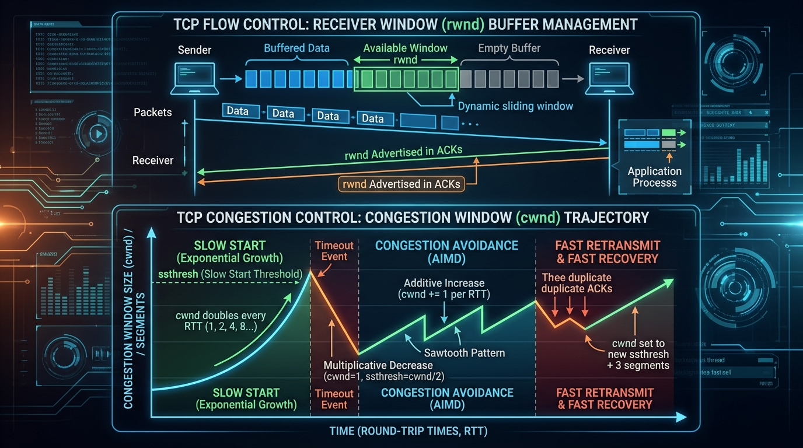

Understand TCP Sliding Window flow control (rwnd), Congestion Window (cwnd) mechanisms (Slow Start, AIMD, Fast Retransmit & Fast Recovery), and RDT primitives.
Flow Control prevents a fast sender from overwhelming a slow receiver's buffer. TCP uses a **Dynamic Sliding Window Protocol**.
The receiver continuously advertises its available buffer space via the **Receiver Window (rwnd)** field in TCP header ACK updates.
Silly Window Syndrome (SWS) occurs when data is transmitted in tiny 1-byte chunks, causing 40 bytes of TCP/IP header overhead for 1 byte of payload!
While flow control protects the receiver, Congestion Control protects the intermediate network routers from buffer overflow.
cwnd starts at 1 MSS (Maximum Segment Size).cwnd increases by 1 MSS (doubles every RTT: 1 → 2 → 4 → 8 → 16 MSS).cwnd reaches the **Slow Start Threshold (ssthresh)**.cwnd ≥ ssthresh, growth shifts to **Additive Increase**.cwnd increases by 1 MSS per RTT (linear growth: 16 → 17 → 18 → 19 MSS).ssthresh = cwnd / 2, and reset cwnd = 1 MSS.If a single segment is lost in a stream, the receiver sends **3 duplicate ACKs** for the missing segment. Upon receiving 3 duplicate ACKs, the sender immediately retransmits the missing segment **WITHOUT waiting for the Retransmission Timeout (RTO) timer** to expire!
Instead of resetting cwnd back to 1 MSS after 3 duplicate ACKs, TCP skips Slow Start and goes directly into Congestion Avoidance with cwnd = ssthresh + 3 MSS.

| Feature | TCP Tahoe (Older) | TCP Reno (Modern Standard) |
|---|---|---|
| Reaction to Timeout | ssthresh = cwnd / 2, cwnd = 1 MSS | ssthresh = cwnd / 2, cwnd = 1 MSS |
| Reaction to 3 Duplicate ACKs | Resets cwnd = 1 MSS (Enters Slow Start) | Sets cwnd = ssthresh (Enters Fast Recovery) |
| Fast Recovery Support | No | Yes |
| Throughput Efficiency | Lower (restarts from 1 MSS every loss) | Significantly Higher (maintains linear growth) |
| RDT Mechanism | Function / Purpose |
|---|---|
| Checksums | Detect bit errors in transmitted segments. |
| Sequence Numbers | Detect lost, duplicate, or out-of-order segments. |
| Acknowledgements (ACKs) | Inform sender that specific bytes were received successfully. |
| Retransmission Timers (RTO) | Trigger retransmission if ACK is not received within estimated RTT timeout window. |
| Sliding Window Buffers | Provide flow control and pipe pipelining for maximum throughput. |